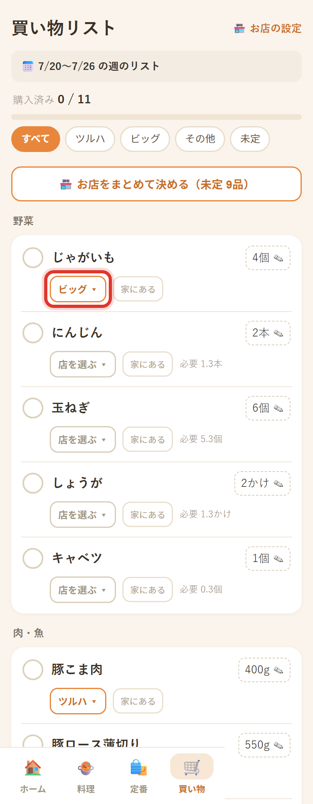

1 曜日を選ぶ
献立を入れたい日をタップ
最初の画面が1週間の献立表です。1週間ぶん決めなくて大丈夫。まずは今日か明日の1日だけで十分です。
「料理を追加」の行をタップ
先週と同じでいいときは？画面の下にある「📋 先週の献立をコピー」を押すと、先週の内容がそのまま入ります。
はじめての人へ
難しい設定はありません。曜日を選んで、食べたい料理を選ぶだけ。必要な材料が自動でまとまります。
基本の使い方
画像はタップすると大きく見られます。
最初の画面が1週間の献立表です。1週間ぶん決めなくて大丈夫。まずは今日か明日の1日だけで十分です。
「料理を追加」の行をタップ

230品ほど入っています。上のカテゴリで絞ったり、料理名・材料名で検索できます。1日に何品でも入れられます。
料理の右にあるオレンジの「＋」をタップ

選んだ料理に必要な材料が、自動で1つのリストにまとまります。同じ材料は足し算され、家族の人数に合わせた量になります。
画面下のオレンジのボタンをタップ

買った物から順にチェックしていきます。全部終わったら、一番下の「買い物を完了」を押します。
品物の左にある「○」をタップ

必要な人だけ
「これはツルハ、これはビッグ」のように分けたい場合だけ使ってください。行くお店が1つなら、この機能は使わなくて大丈夫です。
慣れてきたら
最初から全部使う必要はありません。
料理の「☆」を押すと★になります。カテゴリの先頭に「⭐よく作る」が出て、いつもの料理だけをすぐ選べます。
牛乳・パン・日用品など、献立と関係なく買う物を登録できます。個数も指定でき、⭐を付けると毎回自動でリストに入ります。
献立表の「表示する食事」で朝・昼をONにすると、1日が3段になり、朝ごはんやお弁当も管理できます。
機種変更前は「⚙設定 → バックアップ保存」。新しい端末でそのファイルを読み込めば、そのまま引き継げます。

いちばん効く工夫
230品から毎回探すのは大変です。いつも作る料理に★を付けておくと、次からはワンタップでその中から選べます。
困ったとき
無料・広告なしです。登録もログインも必要ありません。リンクを開けばすぐ使えます。
お使いの端末の中だけに保存されます。献立や買い物の内容がインターネット上に送られることはありません。
置けます。iPhoneはSafariの共有ボタン →「ホーム画面に追加」、AndroidはChromeの右上「⋮」→「ホーム画面に追加」です。普通のアプリのように開けます。
使えます。一度アプリを開いておけば、圏外でも買い物リストを見られます。
料理を選ぶ画面の「−」で1つずつ減らせます。その日の分をまとめて消したいときは、献立表で料理を長押ししてください。
共有されません（端末ごとに別々です）。移したいときは「⚙設定 → バックアップ保存」でファイルを保存し、もう一方の端末で「読み込み」してください。
そのままでは移りません。古い端末で「⚙設定 → バックアップ保存」を行い、新しい端末で読み込んでください。
「⚙設定 →🔄 アプリを最新に更新する」を押してください。保存したデータは消えません。